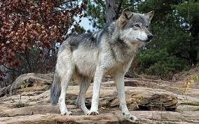
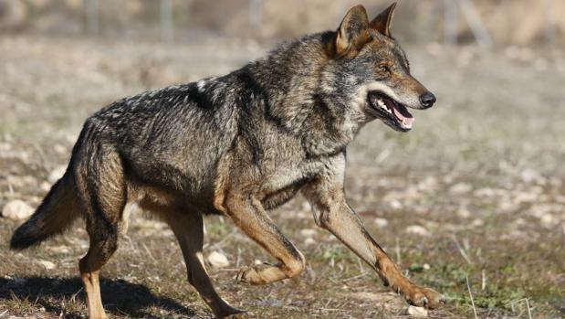
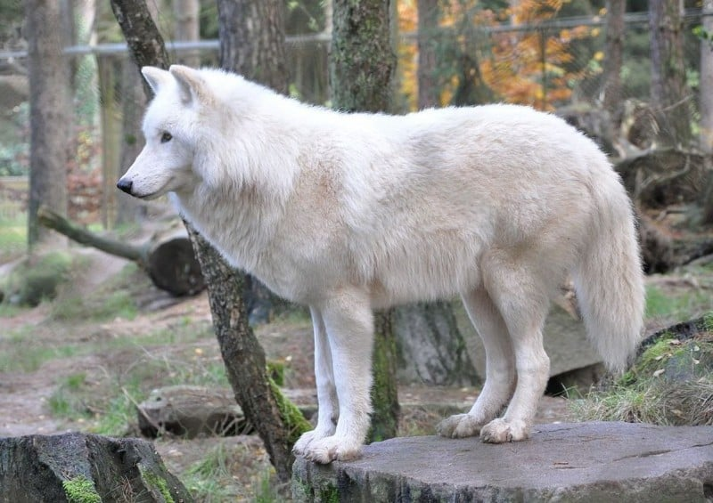
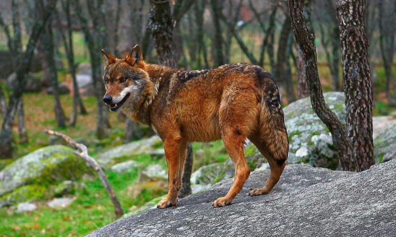
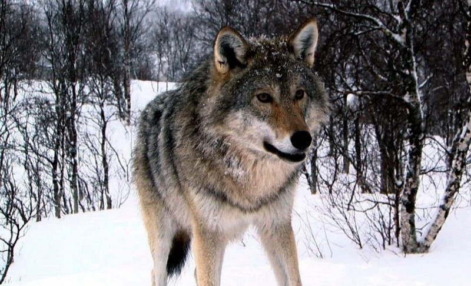
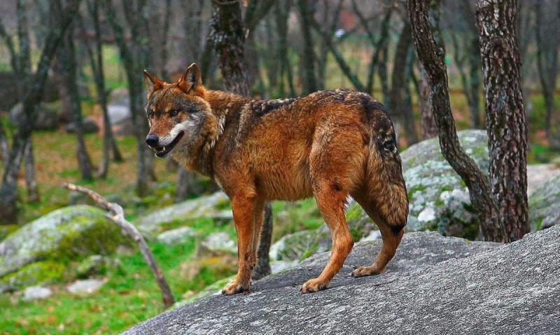
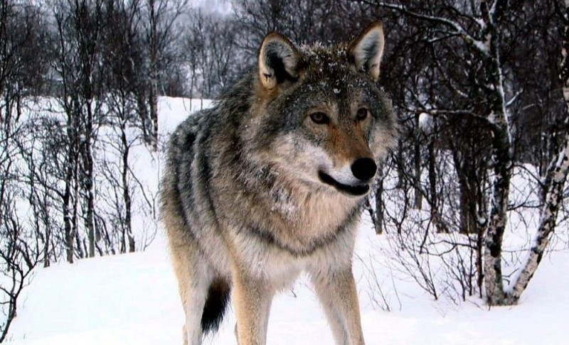

¿Donde Habitan?
Todas las especies de lobos se distribuyen en el hemisferio norte. Sin embargo, al existir tanta diversidad dentro de este grupo, para contestar concretamente a la pregunta "¿dónde viven los lobos?" debemos especificar a qué tipo de lobo nos queremos referir. En este artículo, te contamos el hábitat de los lobos
más populares.
¿Dónde vive el lobo gris?

Antiguamente, el lobo gris se distribuía por toda Norteamérica y Eurasia, ocupando todos los hábitats (planicies, desiertos, tundras, taigas y bosques) excepto las altas montañas.Actualmente, existen poblaciones en Norteamérica, Europa y Asia. Sin embargo, esta especie ha pasado por un gran exterminio por parte del ser humano, que además hace uso de los hábitats donde viven los lobos,y los ha ido desplazando hacia las zonas boscosas y remotas.
¿Dónde vive el lobo ibérico?

El lobo ibérico (Canis lupus signatus) es una de las subespecies del lobo gris. Esta subespecie es endémica de
la Península Ibérica (solamente existe en España y Portugal). En España se distribuye al norte del país
(Galicia, Cantabria, Asturias, Castilla y León), y se han encontrado dos focos aislados al sur del país (en
Sierra de San Pedro y en Sierra Morena). Se estima que su población total está compuesta por 2.000 individuos.
¿Dónde vive el lobo blanco?

El lobo blanco (Canis lupus arctos) es otra de las subespecies del lobo gris. Se caracteriza por tener el pelaje completamente blanco y por su resistencia a temperaturas más bajas. Se distribuye por Norteamérica y llega hasta las regiones árticas de Canadá y norte de Groenlandia.
¿Dónde vive el lobo rojo?
 El lobo rojo (Canis rufus) se encuentra clasificado como una especie en peligro crítico por la UICN (Unión Internacional para la Conservación de la Naturaleza). Solamente habita en Carolina del Norte (Estados Unidos) y la única población que queda fue reintroducida por la USFWS (United States Fish and Wildlife Service), debido a que en 1980 esta especie se extinguió en su estado salvaje.


El lobo rojo (Canis rufus) se encuentra clasificado como una especie en peligro crítico por la UICN (Unión Internacional para la Conservación de la Naturaleza). Solamente habita en Carolina del Norte (Estados Unidos) y la única población que queda fue reintroducida por la USFWS (United States Fish and Wildlife Service), debido a que en 1980 esta especie se extinguió en su estado salvaje.

